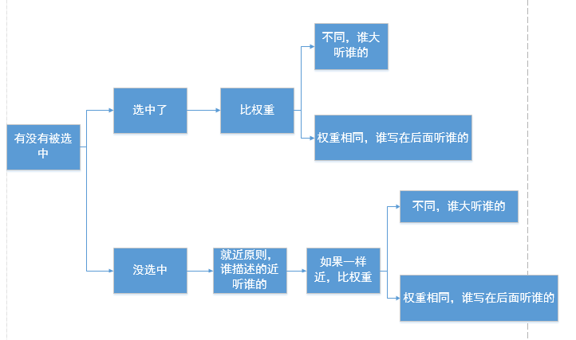

2D转换
- 缩放 transform:scale(x,y) 大于1表示放大
- 位移 translate(x,y) 正值像右向下
- 旋转 transform: rotate(角度) 正值顺时针 负值逆时针 单位deg
- 旋转的坐标远点 默认的中心 transform-origin: 水平坐标 垂直坐标;


两种写法 作为一个属性，设置给父元素，作用于所有3D转换的子元素；作为 transform 属性的一个值，做用于元素自身。